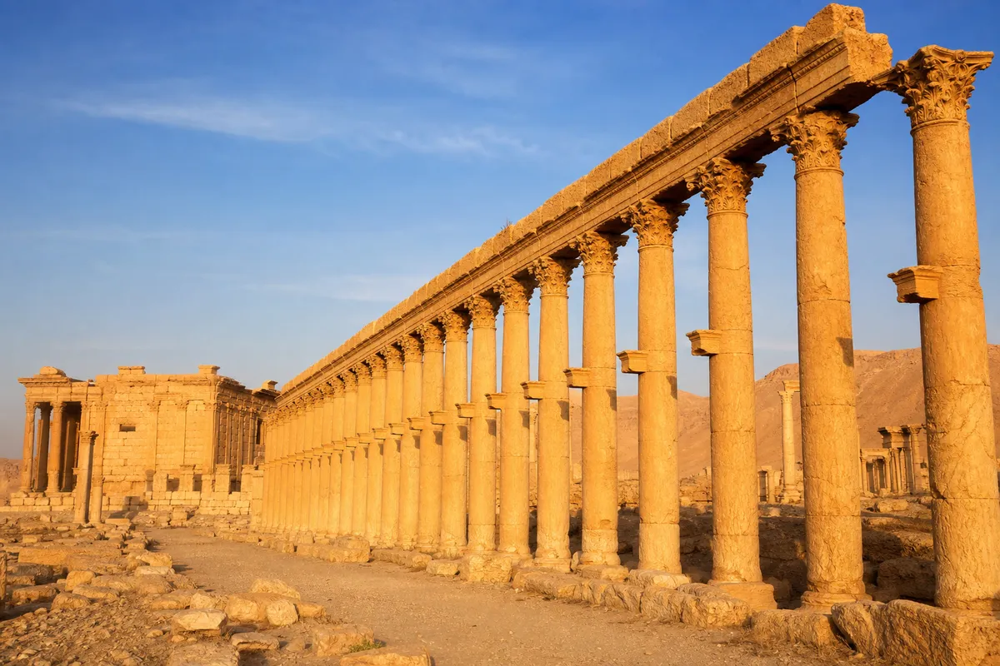
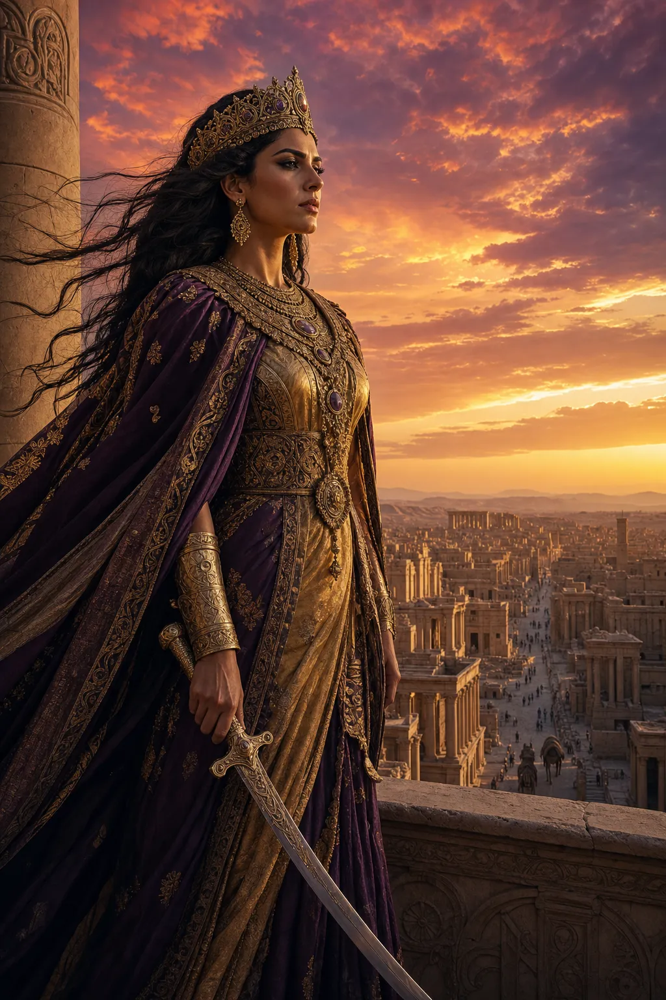
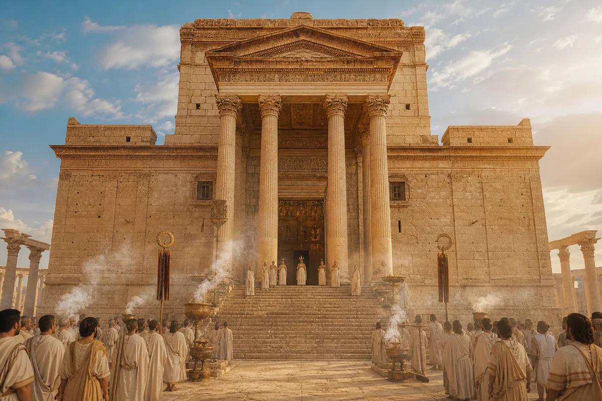
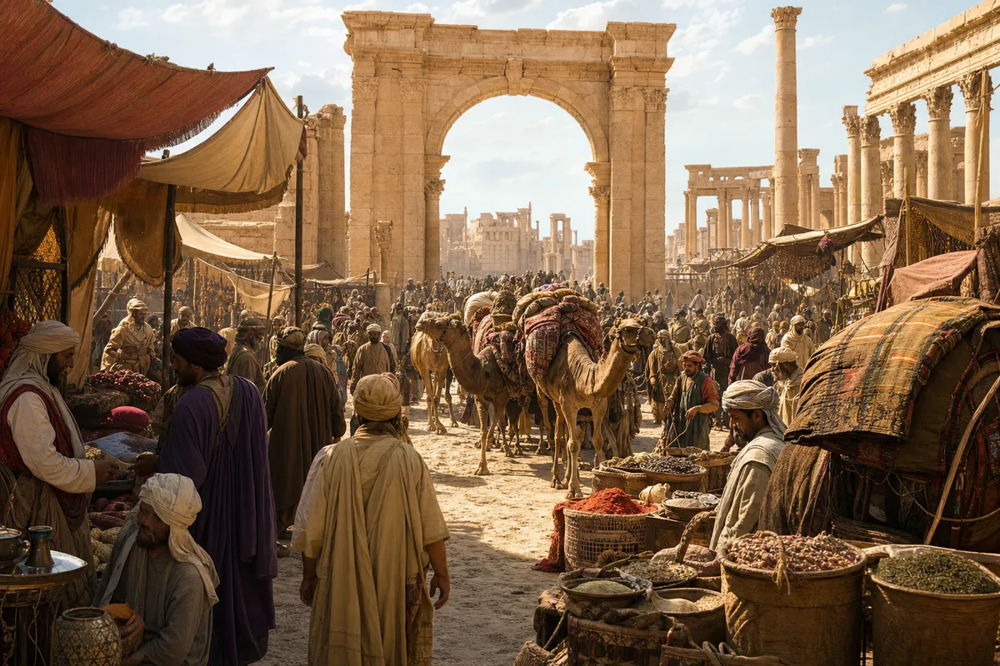
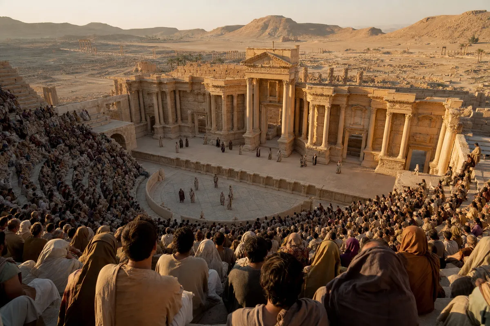
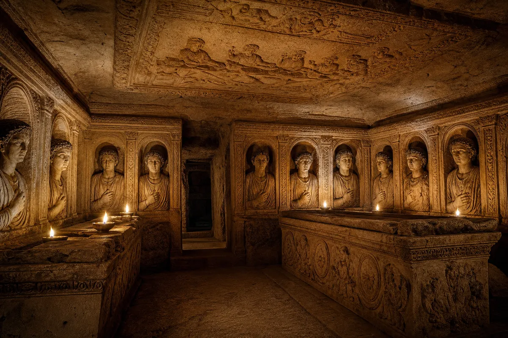

"They destroyed the temple. They could not destroy the memory. The columns still stand in every Syrian heart."






What the desert road offered to those who earned the crossing
Seven souls who shaped the Bride of the Desert